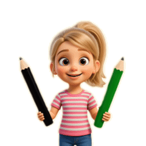

Кристина:
Привет! Мы продолжаем исследование. Сегодня — Псалом 15. Это пророчество о воскресении Христа. Я подготовила для тебя особое задание: ты будешь отмечать слова двумя цветами. Готов? Тогда начнём!
👀 Наблюдение

Кристина:
🖤 Нажми на слова, которые говорят о смерти — они отметятся чёрным.
💚 Нажми на слова, которые говорят о жизни — они отметятся зелёным.
Подсказка: всего 6 слов.
💚 Нажми на слова, которые говорят о жизни — они отметятся зелёным.
Подсказка: всего 6 слов.
10 Ты не оставишь души моей в аде🖤 и не дашь святому Твоему увидеть тление🖤,
11 Ты укажешь мне путь жизни💚: полнота радостей💚 пред лицем Твоим, блаженство💚 в деснице Твоей вовек💚.
11 Ты укажешь мне путь жизни💚: полнота радостей💚 пред лицем Твоим, блаженство💚 в деснице Твоей вовек💚.
🔗 Связь с Новым Заветом
Кристина:
Отлично! Ты нашёл все слова. А теперь посмотри, где этот Псалом цитируется в Новом Завете.
| Слово из Псалма | Где цитируется | Что это значит |
|---|---|---|
| «не оставишь души моей в аде» (ст. 10) | Деян. 2:27 | Бог не оставил Христа в смерти |
| «не дашь святому Твоему увидеть тление» (ст. 10) | Деян. 2:27 | Тело Христа не истлело — Он воскрес |
| «Ты укажешь мне путь жизни» (ст. 11) | Деян. 2:28 | Через воскресение открыт путь к вечной жизни |
🤔 Размышление
Кристина:
Посмотри на два цвета. Что они говорят тебе о Христе?
💭 Подумай и ответь:
Чёрные слова — о смерти, но они не исполнились над Христом: смерть не удержала Его.
Зелёные слова — о жизни, и они исполнились: Христос воскрес и дарует жизнь всем, кто верит в Него.
Зелёные слова — о жизни, и они исполнились: Христос воскрес и дарует жизнь всем, кто верит в Него.
🕊️ Вывод
Кристина:
Псалом 15 показывает контраст: смерть отступила — жизнь восторжествовала. Христос воскрес! И через Него мы получаем путь жизни, полноту радости и блаженство навеки.
Главная истина: Христос воскрес — смерть не удержала Его, и Он дарует нам жизнь.
«Он прежде сказал о воскресении Христа, что не оставлена душа Его в аде, и плоть Его не видела истления»
— Деяния 2:31
— Деяния 2:31